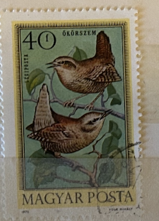
| SOURCE | TITLE| IMAGE MATCH | click to source page |
| eBay | Postage Stamp Hungary 40 Forint Bird Wren Jenny 12X16 Inch Framed Art Print | eBay | 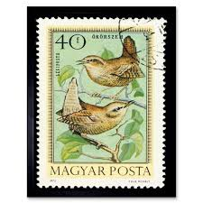 |
| Etsy | Upcycling Amulet From Stamp Birds Chain Pendant - Etsy | 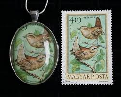 |
| eBay | POSTAGE STAMP HUNGARY 40 FORINT BIRD WREN JENNY NEW FINE ART PRINT POSTER PICTUR | eBay | 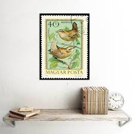 |
| Vichy (@lo.de.vichy) • صور ومقاطع فيديو على Instagram | 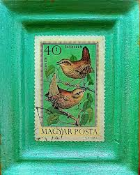 | |
| Aukro | Maďarsko 1951, PORTO III., hnědá emise, číslo pod poštovní trubkou | Aukro | 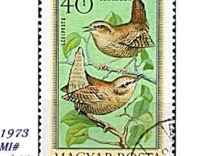 |
| postage stamps on Pinterest | 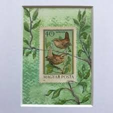 | |
| Ay.by | Венгрия 1973 г.Евразийский крапивник ./33а/. Купить в Минске — Марки Ay.by. Лот 5040272533 | 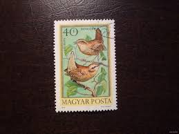 |
| Aukro | Bahamy,ptáci,4-blok | Aukro | 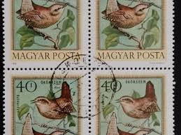 |
| eBay | Great Britain Jersey 2009 Sc 1389-1394 Birds Thrush Wren Robin CV $10.90 | eBay | 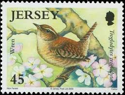 |
| Dreamstime.com | Eurasian Wren Troglodytes Troglodytes, Birds 1987 Serie, Circa 1987 Editorial Photo - Image of vintage, hobby: 223498946 | 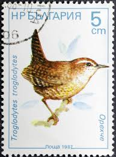 |
| Drive2 | Марочки))) — DRIVE2 | 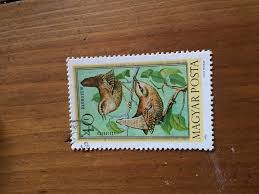 |
| philatelicmarket.com | пощенски марки Пойни птици bulgaria 1987 | 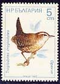 |
| eBay UK | Bulgaria 1987 Winter Wren 5s Fine Used SG 3466 VGC | eBay UK | 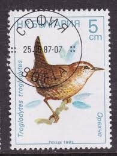 |
| Dreamstime.com | In1987 Stock Photos - Free & Royalty-Free Stock Photos from Dreamstime | 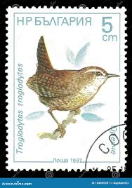 |
| Nadir Kitap | çalıkuşu kitabı | 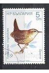 |
| filatelia.md | International Birds Day. Singing Birds. | SE ”Posta Moldovei”. Philately. | 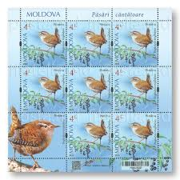 |
| Базар.БГ | Пощенски марки чиста комплектна серия ЖИВОТНИ ПТИЦИ поща НРБЪЛГАРИЯ 46518 в Филателия в гр. Бургас - ID46874131 | Bazar.bg | 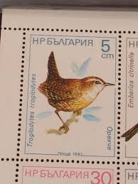 |
| Wikipedia | List of birds of Ireland - Wikipedia | 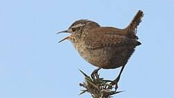 |
| eBay | Belgium - 1992 - 11Fr - Birds - Troglodytes troglodytes - #17811 | eBay | 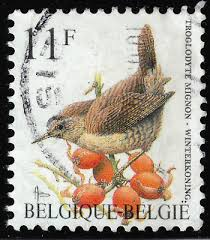 |
| Todocolección | sello bulgaria 7 ab - rey - Buy Antique stamps of Bulgaria on todocoleccion | 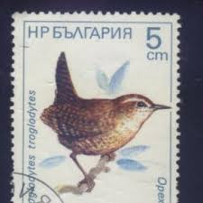 |
| Dreamstime.com | Delichon Urbicum Isolated Stock Photos - Free & Royalty-Free Stock Photos from Dreamstime | 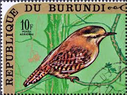 |
| HipStamp | Belgium 1445 Birds 1992 | Europe - Belgium & Colonies, General Issue Stamp / HipStamp | 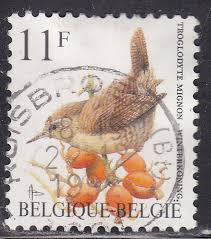 |
| Smithsonian Magazine | The Irish Used to Celebrate the Day After Christmas by Killing Wrens | 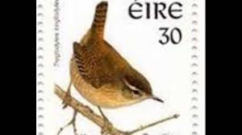 |
| eBay | Belgium - 1992 - 11Fr - Birds - Troglodytes troglodytes - #17810 | eBay | 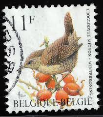 |
| Little Wren (Troglodytes troglodytes) has found a warm home inside a tree (in the Netherlands) | 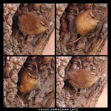 | |
| Aukro | ZNÁMKY - PORTUGAL ** - FAUNA - 22 === | Aukro | 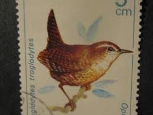 |
| Birds of the World | Eurasian Wren - Troglodytes troglodytes - Birds of the World | 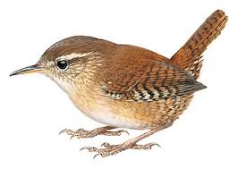 |
| eBay | S3260 Falkland Islands 2009 birds 4v. MNH | eBay | 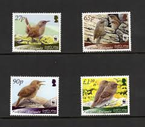 |
| A few of the first Bird Photos of the New Year! | 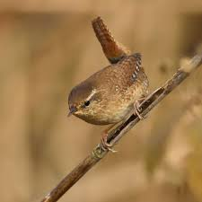 | |
| eBay | 2020 Songbirds in our Neighborhood FDC19294 | eBay | 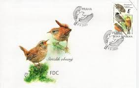 |
| Medium | Britain's Favourite Bird Is A Bully | by Madeleine Clarke | Medium | 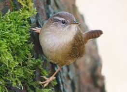 |
| National Audubon Society | Winter Wren - Migration | Bird Migration Explorer | 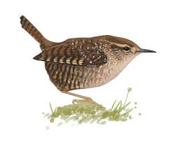 |
| From my hide this Saturday. Nothing big came in but I've started feeding up the area, so more activity from songbirds. Had the usual suspects....and a dunnock and greenfinch came to the | 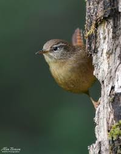 | |
| Etsy | 10 South Carolina Postage Stamps - State Bird and Flower - Pack of (10) Vintage (issued in 1982) Unused Original USPS Stamps for US Mail. - Etsy | 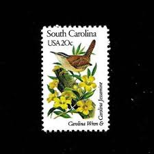 |
| My fav wee bird the Wren can always hear it long before seeing it ❤ | 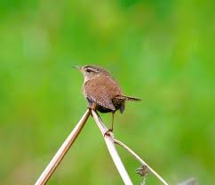 | |
| A good day at Greylake, and there was even some sunshine! Advance warning- a Bearded Reedling post will follow! | 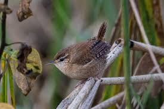 | |
| Wren on a rope! | 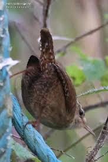 | |
| eBay | SS1486 2009 FALKLAND ISLANDS WWF BIRDS COBB'S WREN FAUNA #1078-81 48 EURO MNH | eBay | 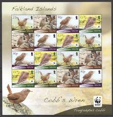 |
| Colnect | Stamp: Eurasian Wryneck (Jynx torquilla) (Kuwait(Birds Definitives) Mi:KW 601,Sn:KW 588d,Yt:KW 590,Sg:KW 604 📮 | 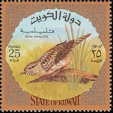 |
| Tumblr | Special Collections — A Valentine's Feathursday | 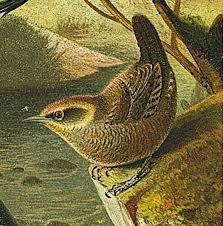 |
| BirdForum | Little Wren | BirdForum | 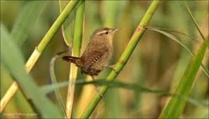 |
| Птиците в България | Photos of Winter Wren, Troglodytes troglodytes - Birds in Bulgaria | 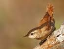 |
| 69 Trevor Boyer Bird Artist ideas to save today | bird artists, trevor, artist and more | 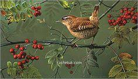 | |
| Dreamstime.com | 1,801 Circa 1992 Stock Photos - Free & Royalty-Free Stock Photos from Dreamstime | 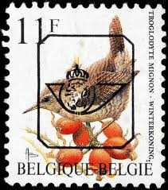 |
| HipStamp | US 1992 MNH State Birds/Flowers South Carolina Carolina Wren/Jasmine | United States, General Issue Stamp / HipStamp | 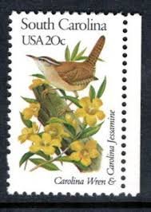 |
| Osprey Signs | Products – Page 44 – Osprey Signs | 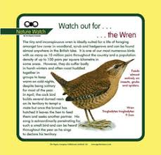 |
| Mystic Stamp Company | 279 - 1970 St. Vincent - Mystic Stamp Company | 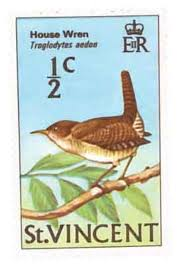 |
| little wren - D7200 and nikon AF-S 200-500mm : r/Nikon | 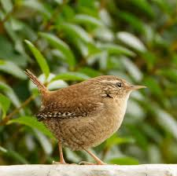 | |
| Wren Photographed near Borgue | 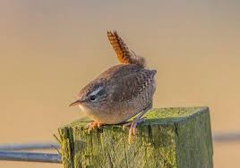 | |
| Людмила Ломаева (wsenadoelo65) - Profile | Pinterest | ||
| Tatiana Rhinevault (tprhinevaullt) - Profile | Pinterest | ||
| Colin Wise Photography (@colinwisepetphotography) • Facebook | ||
| Nepal Desk | Exploring the Fascinating Troglodytinae Bird Subfamily | Nepal Desk | |
| Saturday evening walk around one of our local nature reserves in Dumfries and Galloway 😊 | ||
| X | Ask your child to tell you the story of Zog using our story map! #Talk4Writin #Zog | |
| Bluesky | Brodie (@brodiecasstalbott.bsky.social) — Bluesky | |
| A Male Jenny Wren in my garden today. Middle English (Wrenne) meaning little tail. South Oxfordshire. | ||
| Etsy | Buy RARE Vintage/retro 1960s 'for You in HOSPITAL' Stunning Bird Design Get Well Soon Card - Sweet, Sentimental Verse - Vintage/bird Lover Card Online in India - Etsy | |
| Wikimedia.org | File:Ibis (1885) (14565465039).jpg - Wikimedia Commons |
_(14565465039).jpg){kind=link}